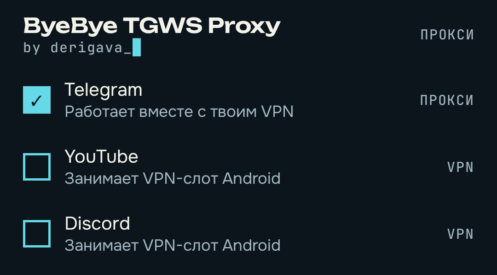
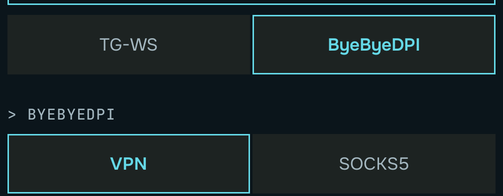

ByeBye TGWS Proxy
Два независимых модуля
Прокси и DPI-обход
в одном приложении
TG-WS подключает Telegram через MTProto. ByeByeDPI работает как системный VPN или локальный SOCKS5.


Два независимых модуля
TG-WS подключает Telegram через MTProto. ByeByeDPI работает как системный VPN или локальный SOCKS5.

